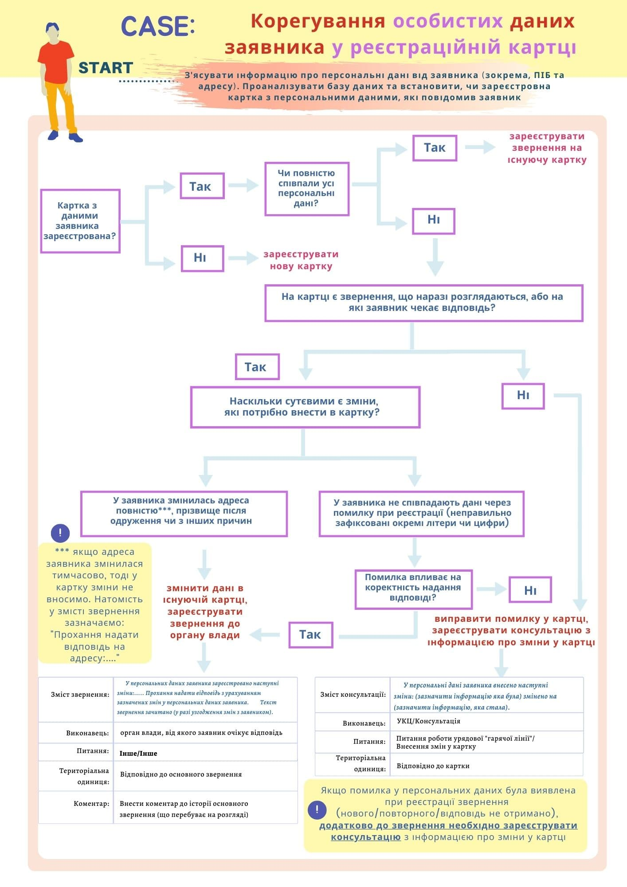

Корегування особистих даних заявника у реєстраційні картці
оновлено 18 серпня 2022 | Posted by Лях А. А.
Зміст збірки
- Урядова "гаряча лінії" Загальна інформація. Структура Центру
- Основна нормативно-правова база
- Схема розмови з заявником
-
Реєстрація картки
Стандарти реєстрації персональних даних заявника
- Корегування особистих даних заявника у реєстраційні картці
-
Класифікація звернень, визначення атрибутів
Окремі випадки визначення територіальної одиниці, якої стосується питання, якого стосується звернення
- Визначення джерела надходження
- Класифікація звернень за особливою умовою
-
Види звернень
Повторне звернення
- Повідомлення про неотримання звернення
- Зняття з розгляду звернення
- Доповнення до звернення
-
Взаємодія відділів з питань прийому та опрацюванню звернень
Заявник зателефонував з питанням щодо звернення, що зареєстровано через вебсайт
- Заявник зателефонував з питанням щодо звернення, що зареєстровано на лінії 1547
- Опрацювання звернень від осіб з порушенням слуху
-
Опрацювання дзвінків від громадян з-за кордону
-
ВПО. Особливості реєстрації звернень
-
Причини статусу неготовності прийому дзвінків у системі Cisco Finnesse
- Фільтри для перевірки звернень